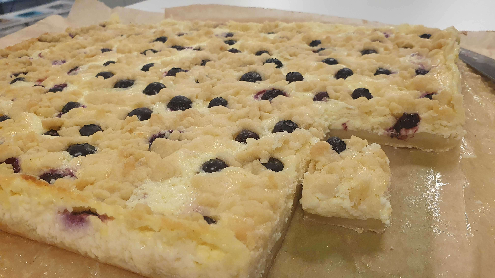

Quark Crumble Cake with Lemon and Blueberries
metadata
Created on 2023-06-27 Last updated on 2023-08-13
Adapted from Käsekuchen mit Streusel by Kathrin Runge @ Backen macht glücklich (2023-06-26)
Recipe should yield this much: Using a 34x24 cm form – 1 cake.
Estimated time needed: At least 1 hours 23 minutes. At most 1 hours 47 minutes.
Ingredients
| 600 | g | quark | We use a variety with vanilla flavor | |
| 500 | g | flour | ||
| 300 | g | butter | Melted, lukewarm-ish or colder | |
| 300 | g | sugar | ||
| 225 | g | blueberries | ||
| 75 | g | whipped cream stabilizer | "Fromasjpulver" in Norwegian. Any custard powder would probably be okay too. | |
| 3 | tsp | baking powder | ||
| 3 | dl | heavy cream | 37% fat | |
| 1 | organic lemon | Zest and juice |
Scaling
Timeline
Directions
⌛ Active time 7 minutes
- 300 g butter
- 500 g flour
- 3 tsp baking powder
- 200 g sugar
Mix together:
Weight and mix together the dry ingredients in a bowl. Add the butter, and try to "push the butter through the flour mixture" (mixing it). After a little while, you should end up with a dough in one piece.
⌛ Active time 3 minutes
Press 2/3rd into baking tray:
Cover a 40x30cm baking tray with a baking sheet. Take 2/3 of the dough and press it into the tray.
⌛ Active time 1 minutes | Passive time 10 minutes
Bake for 10 minutes, 175 ℃:
Take in out of the oven to cool when done.
⌛ Active time 1 minutes | Passive time 10 minutes
Refridgerate remaining dough:
Store the remaining third of the dough in an airtight container, and transfer this container to the fridge
⌛ Active time 5 minutes
- 3 dl heavy cream | 37% fat
Whip the cream:
Use a kitcher machine or hand mixer to whip the cream stiff-ish.
⌛ Active time 5 minutes
- 600 g quark | We use a variety with vanilla flavor
- g butter | Melted, lukewarm-ish or colder
- 75 g whipped cream stabilizer | "Fromasjpulver" in Norwegian. Any custard powder would probably be okay too.
- 1 None organic lemon | Zest and juice
- 100 g sugar
Mix together:
Find a bowl (reuse the dough one?) and weight the ingredients in it. Use a blender to mix together the ingredients. Follow the package instructions of your whipped cream stabilizer (pretending quark is water).
⌛ Active time 3 minutes
Fold in cream:
Gently mix the whipped cream with the rest of the filling.
⌛ Active time 1 minutes
Pour filling onto the cake:
Once the bottom has cooled down, spread the filling on top.
⌛ Active time 4 minutes
- 225 g blueberries
Add blueberries:
Add blueberries on top of the filling, pushing a bit into the filling if needed.
⌛ Active time 1 minutes | Passive time 10 minutes
Add remaining dough:
Use a grater to sprinkle the remaining dough on top of the cake.
⌛ Active time 1 minutes | Passive time 45 minutes
Bake for 45 minutes:
At 175 ℃, bake the cake until the top is golden brown.